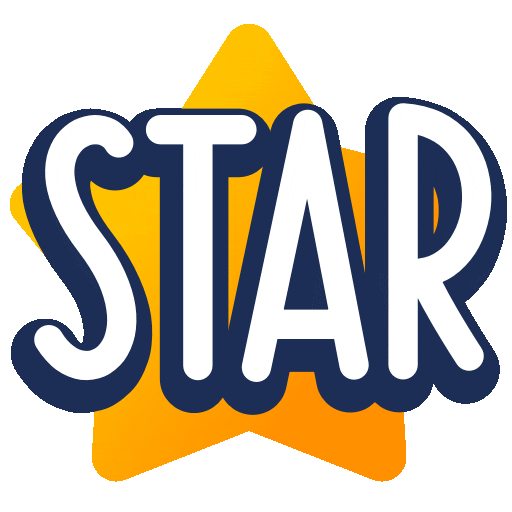
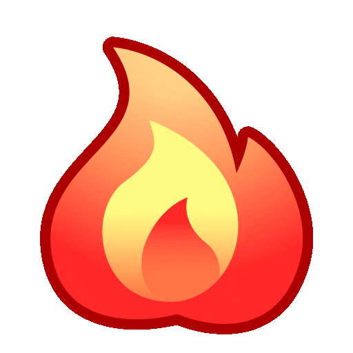
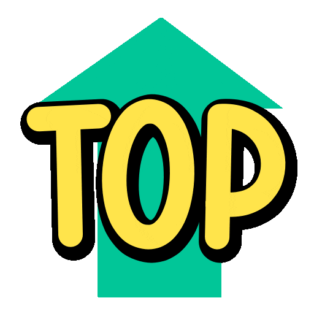

This Week in Moscow: September 28–4
Spring is here and so is your English practice! Here is your weekly lineup of speaking clubs, game nights, and special events happening all over Moscow. Whether you are a beginner or an advanced speaker, there is something for you.
This week we have over 99 events across the city and online. Venues range from cozy coffee shops like Coffee Bean and Stars Coffee to lively bars like Katie O'Shea's and Axiom Pub. Most clubs welcome new faces — just show up and start talking!
📋 Weekly Schedule
Here is how to plan your week. Click on any club name to visit their channel for details and registration.
Monday, September 28
- 20:00 | Ziferblat's English Club | Ziferblat on Pushkinskaya
- 19:00 | Blah-Blah Club | Surf Coffee x Rock
- 19:00 | English with Gily & Masha | Ziferblat on Mayakovskaya

- 19:00 | Viva Lingua Club | Лялин пер. 23-29с1, м. Курская
- 19:00 | Social English Club by Leonid | Surf Coffee x Ostozhenka
- 19:00 | Pablo Place - The Art of Gatherings | Park Muzeon
- 19:00 | English Starts Today! | Online
- 19:30 | English Club with Nataly | Union Jack pub
- 19:30 | Orthodox Christian Discussion Club | Valaam Monastery
Tuesday, September 29
- 10:30 | Pablo Place - The Art of Gatherings | Online
- 19:00 | Viva Lingua Club | Лялин пер. 23-29с1, м. Курская
- 19:00 | Real Talk Speaking Club | Surf Coffee
- 19:00 | English Starts Today! | Online
- 19:00 | Board games - Goose Club | Geektime Anticafe
- 19:15 | Moscow Today Club | Coffeeshop
- 19:30 | Ziferblat's English Club | Ziferblat on Kuznetsky Most
- 19:30 | CherryPie Club | Sytinsky lane 3/5
- 19:30 | English Club with Nataly | Cosmic latte
- 19:30 | English Speaking Club | Coffeeshop
- 19:30 | English Club | Triumph Lounge Bar

- 20:00 | Blah-Blah Club | Surf Coffee x Flacon
Wednesday, September 30
- 18:45 | English Literature Club | Svetlovka library
- 19:00 | Ziferblat's English Club | Ziferblat on Mayakovskaya
- 19:00 | Viva Lingua Club | Лялин пер. 23-29с1, м. Курская
- 19:00 | Real Talk Speaking Club | Stars Coffee
- 19:00 | Wednesday English Speaking Club | Checkpoint
- 19:00 | English Games Club | Grabli Cafe
- 19:00 | Sunrise Literature Club | Central Library 21
- 19:00 | English Starts Today! | Online
- 19:10 | LinguaClub | Online
- 19:20 | English at IRISHMAN | Irishman Pub 1905
- 19:30 | English Club with Nataly | Cosmic latte
- 20:00 | Blah-Blah Club | Rébellion The Palace of Youth
- 20:00 | Viva Lingua Club | Online
- 20:00 | ISN HSE Moscow | Craft RePUBlic
Thursday, October 1
- 10:30 | Pablo Place - The Art of Gatherings | Online
- 14:00 | LinguaClub | Online
- 18:00 | Engsider Speaking Club | Online
- 18:55 | Thursday After Work | Debri Bar
- 19:00 | Viva Lingua Club | Лялин пер. 23-29с1, м. Курская
- 19:00 | English Galaxy Speaking Club | Online
- 19:00 | English Starts Today! | Online
- 19:30 | Just Talk English Speaking Club | Ziferblat on Mayakovskaya
- 19:30 | English Club with Nataly | Coffeeshop Company
- 19:30 | English Speaking Club | YesNoMilk
- 19:30 | Social English Club by Leonid | Surf Coffee x Ostozhenka
- 20:00 | Blah-Blah Club | Surf Coffee x Solyanka
- 21:00 | Dark English Academia | Online
Friday, October 2
- 19:00 | Ziferblat's English Club | Ziferblat on Mayakovskaya
- 19:00 | English Speaking Club | Coffeeshop
- 19:00 | Friday Point | Library
- 19:00 | Real Talk Speaking Club | Stars Coffee
- 19:00 | Ziferblat's English Club | Ziferblat on Mayakovskaya
- 19:00 | 🇪🇸💬🇷🇺Club de Español en Moscu | Bar Santa Muerte
- 19:00 | English Starts Today! | Online
- 19:15 | English Club with Nataly | Cosmic latte
- 19:15 | Moscow English Conversation Club | Stars Coffee
- 19:30 | CherryPie Club | Sytinsky lane 3/5
- 19:30 | Bright School No1 | Izmailovsky Boulevard 50
- 19:30 | Nastushka’s Speaking Club | Library
- 20:00 | Blah-Blah Club | Surf Coffee x Solyanka
- 20:00 | Blah-Blah Club | Surf Coffee x Rock
- 20:00 | Friday Language Exchange Club | Cafe Na Kover

Saturday, October 3
- 12:00 | Viva Lingua Club | Лялин пер. 23-29с1, м. Курская
- 12:00 | ENGLISH CLUB 🛩☁️ MOSCOW | Online
- 14:00 | Viva Lingua Club | Лялин пер. 23-29с1, м. Курская
- 15:00 | Real Talk Speaking Club | Stars Coffee
- 16:00 | English Club with Nataly | Stars Coffee
- 17:00 | Mendeley the Cat Game Club | HvoyaLounge
- 17:00 | Just Talk English Speaking Club | Stars Coffee
- 17:00 | Moscow Today Club | Gorky Park
- 17:00 | V&K English Speaking Club | Coffee Shop Here’n’now
- 17:00 | Simply Say | Could We Be Friends? | Online
- 17:30 | CherryPie Club | Sytinsky lane 3/5
- 18:00 | Friday Point | Library 182
- 18:00 | Kate's English Speaking Club☀️ | StreetEat
- 18:30 | English Lounge | Wine Club🍷
- 19:00 | Blah-Blah Club | Surf Coffee x Secret Spot
- 19:00 | Ziferblat's English Club | Ziferblat on Kuznetsky Most
- 19:30 | Clean Open Mic | Silvers Irish Pub
Sunday, October 4
- 11:30 | Spill The Tea | Online
- 12:30 | Intermediate | Girl's Speaking Club | Online
- 13:00 | Blah-Blah Club | Surf Coffee x Flacon
- 14:00 | English Galaxy Speaking Club | Online
- 14:15 | Beginner | Girl's Speaking Club | Online
- 14:30 | Moscow International Football | Stadium
- 14:30 | Dark English Academia | Moscow-based
- 15:00 | English Speaking Club | Drinkit
- 15:00 | Real Talk Speaking Club | Surf Coffee
- 16:00 | Ziferblat's English Club | Ziferblat on Mayakovskaya
- 16:00 | CherryPie Club | Gauguin Сafe
- 16:00 | English Club with Nataly | Stars Coffee
- 16:00 | Chatty Chillies | Coffee Bean
- 17:00 | Simply Say | Coincidence or Destiny? | Online
- 17:30 | English Club | Triumph Lounge Bar
- 18:00 | Yoteach in touch | Surf Coffee® × Ostankino
- 18:00 | MoscowLEM | Green Dog
- 18:00 | Moscow Pals Club | Katie O'Shea's
- 19:00 | English Club with Nataly | Cosmic latte
- 20:00 | Reading and Vocabulary Club | Online
Tips and Special Offers
- Real Talk Speaking Club — 30% off with a multi-meeting subscription
- Blah-Blah Club x Surf Coffee — Bring a friend, you both save 15%
- English Club with Nataly — offers monthly subscriptions for 4, 6, and 8 sessions
- Surf Coffee — 10% off drinks for club participants
New Here?
Most clubs are very beginner-friendly. Just come with a positive attitude and a willingness to chat. Here is what to expect at different types of events:
- Speaking Clubs
- Casual conversation in small groups or one-on-one. Topics are usually provided. No pressure, just talk.
- Online Clubs
- Join from anywhere via Zoom or Telegram. Perfect if you are shy or short on time.
- Game Nights
- Practice English while playing board games or Mafia. A relaxed way to learn.
- Stand-Up & Open Mics
- Enjoy comedy in English. Some events are free, others require a ticket.
Have a great week and happy speaking!